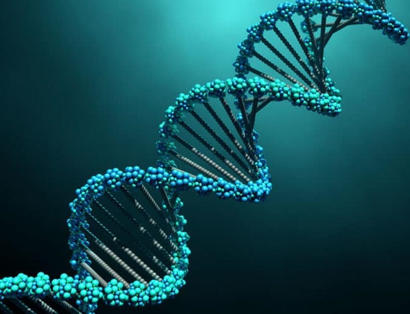

A mendeli genetika alapjai
Üdvözöllek a genetika alapjait bemutató weblapomon, amiben megpróbálom bemutatni néhány tulajdonság különböző öröklődési módját. Remélem, te is érdekesnek találod.
Mit kell tudnod ahhoz, hogy értsd a weboldal tartalmát?
Minden egyed mindkét szülőjétől kap egy-egy az adott tulajdonsághoz meghatározó darabot, és ennek a kettőnek a viszonya fogja meghatározni az egyed megjelenő tulajdonságait.
A genetika fogalma
Az öröklődés és a változékonyság szabályszerűségeivel foglalkozó tudomány.
Genotípus
Az egyed genetikai felépítése (DNS) (ez esetben egy adott tulajdonság mindkét szülőtől örökölt eleme).
Fenotípus
A megjelenő tulajdonságok összegsége (ahogy kinéz az egyed az adott tulajdonságra nézve).
Homozigóta
Olyan egyed, amely egy adott tulajdonságra nézve mindkét szülőjétől azonos változatot kapott.
(Például mindkét szülőtől azt örökölte, hogy magas legyen.)
Jelölése: AA, aa, BB, bb, FF, PP (vagy bármilyen két azonos betű ugyan olyan méretben)
Heterozigóta
Olyan egyed, amely egy adott tulajdonságra nézve szüleitől különböző változatot kapott.
(Például egyik szülőtől azt örökölte, hogy magas legyen, a másiktól azt, hogy alacsony.)
Jelölése: Aa, Bb, FP (vagy két azonos betű különböző méretben, vagy két különböző betű)
Gregor Mendel (1822-1884)
Német származású szerzetes, botanikus és a tudományos örökléstan megalapozója.
Gyakran nevezik őt „a genetika atyjának” is, mert ő állapította meg az ivarosan szaporodó populációkban a gének természetes átörökítésének törvényszerűségeit.
(Borsókkal kísérletezett, de csak néhány kiragadott tulajdonságot vizsgált, amiket utána a statisztika és kombinatorika módszereivel rendszerezett.)
Mendel törvényei
- Uniformitás elve:
- Ha két homozigóta szülőt keresztezünk (P1 és P2), akkor az utódnemzedék F1 összes tagjának genotípusa és fenotípusa is ugyan az lesz.
- Hasadás elve:
- Az első utódnemzedék (F1) tagjait keresztezve a második utódnemzedékben (F2) újra megjelennek a szülői (P) tulajdonságok.
- Független öröklődés törvénye (csak többgénes öröklődésben)
- Különböző tulajdonságok egymástól függetlenül öröklődnek, ezért egyes tulajdonságpárok öröklődésekor az második utódnemzedékben (F2) az eredeti szülői (P) formáktól eltérő kombinációk is megjelennek.
(Lesz olyan egyed, ami se nem úgy néz ki, mint a P nemzedék, és se nem úgy néz ki, mint az F1 nemzedék tagjai)